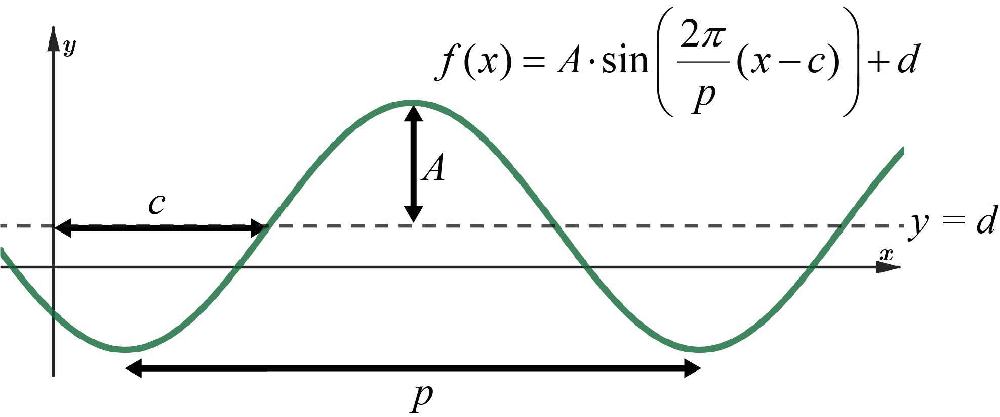
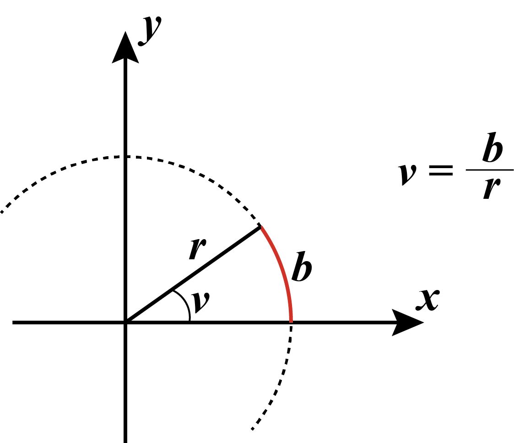
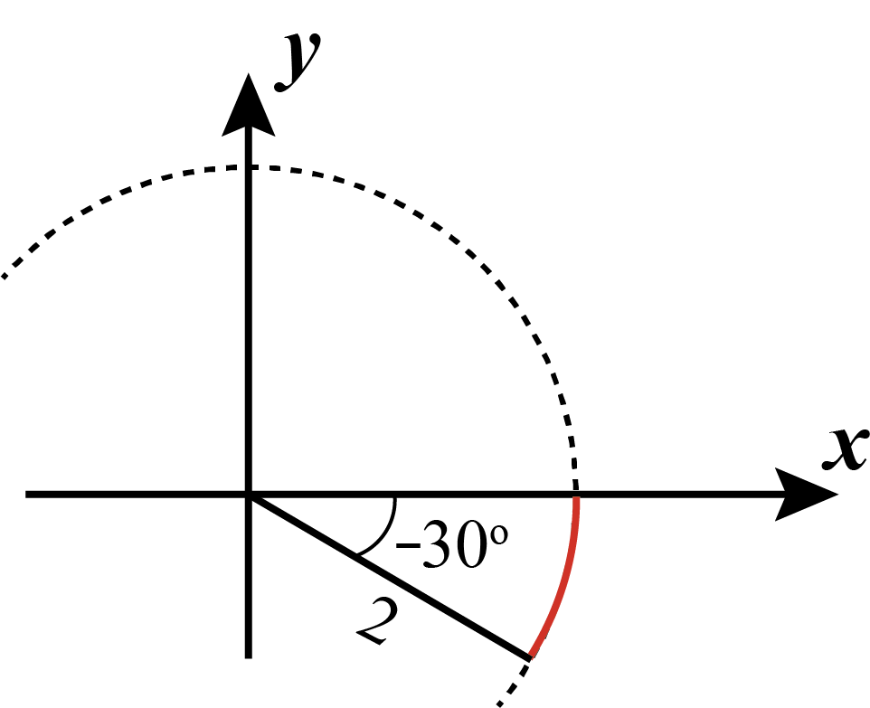
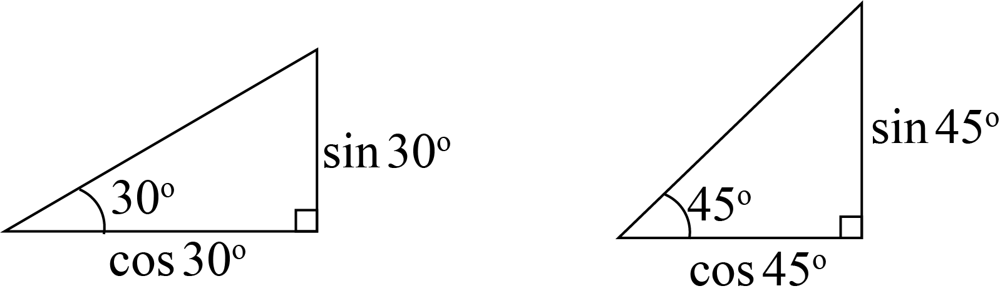
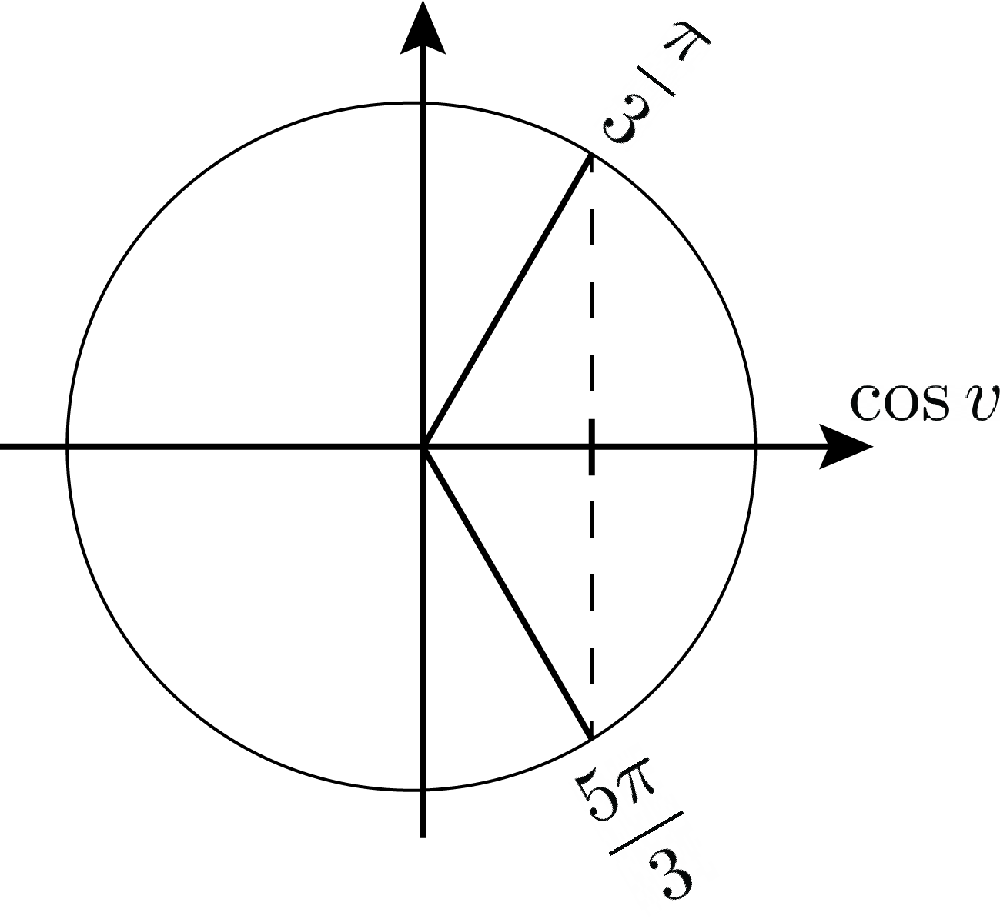
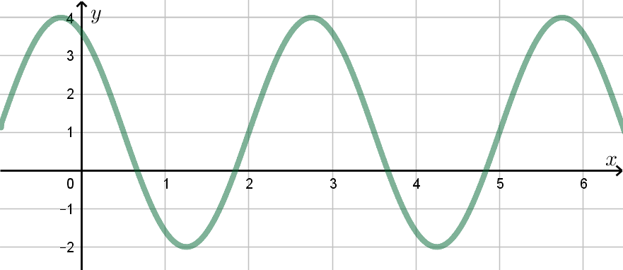
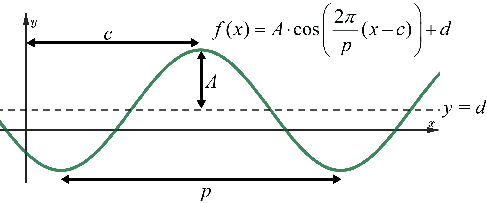

Sammendrag:

Radianer er forholdet mellom lengden av en sirkelbue og radius:

Dermed er sammenhengen mellom \(v\) radianer og \(v\) grader:
\[ v = v^{\text{o}}\cdot \frac{2\pi}{360^{\text{o}}} \]Bestem vinkelen i radianer og lengden av sirkelbuen.

For å angi vinkelen kan vi også gå med klokka, og si at vinkelen er
\[ v = 330^{\text{o}}\cdot \frac{2\pi}{360^{\text{o}}} = \frac{11\pi}{6} \]Sinus og cosinus defineres utfra enhetssirkelen, altså en sirkel med \(r=1\):
Trekanten til høyre viser sammenhengen mellom enhetssirkelen og definisjonene
\[ \sin v = \frac{\text{motstående katet}}{\text{hypotenus}} \quad,\quad \cos v = \frac{\text{hosliggende katet}}{\text{hypotenus}} \]hvor vi bruker at hypotenus \(=1\), siden \(r=1\).

Ved hjelp av enhetssirkelen, pytagoras og trekantene ovenfor, kan vi utlede følgende eksakte sinus-, cosinus- og tangensverdier:
| \(v\) | \(0\) | \(30^{\text{o}}\) | \(45^{\text{o}}\) | \(60^{\text{o}}\) | \(90^{\text{o}}\) | \(120^{\text{o}}\) | \(135^{\text{o}}\) | \(150^{\text{o}}\) | \(180^{\text{o}}\) |
|---|---|---|---|---|---|---|---|---|---|
| \(\sin v\) | \(0\) | \(\frac{1}{2}\) | \(\frac{\sqrt{2}}{2}\) | \(\frac{\sqrt{3}}{2}\) | \(1\) | \(\frac{\sqrt{3}}{2}\) | \(\frac{\sqrt{2}}{2}\) | \(\frac{1}{2}\) | \(0\) |
| \(\cos v\) | \(1\) | \(\frac{\sqrt{3}}{2}\) | \(\frac{\sqrt{2}}{2}\) | \(\frac{1}{2}\) | \(0\) | \(-\frac{1}{2}\) | \(-\frac{\sqrt{2}}{2}\) | \(-\frac{\sqrt{3}}{2}\) | \(-1\) |
| \(\tan v\) | \(0\) | \(\frac{1}{\sqrt{3}}\) | \(1\) | \(\sqrt{3}\) | \(\pm\infty\) | \(-\sqrt{3}\) | \(-1\) | \(-\frac{1}{\sqrt{3}}\) | \(0\) |
Løs likningen
\[ 2\cos(4\pi x-\pi)-1=0 \quad,\quad x\in[0,1] \]Vi skriver om likningen slik at \(\cos(\ldots)\) står alene:
\[ \cos(4\pi x-\pi)=\frac{1}{2} \]Vi bruker enhetssirkelen for å se hva som må stå inni "magen" til \(\cos\):

Altså har vi
\[ \begin{aligned} 4\pi x-\pi = \frac{\pi}{3} \quad &\vee \quad 4\pi x-\pi = \frac{5\pi}{3} \\ 4\pi x = \frac{4\pi}{3} \quad &\vee \quad 4\pi x = \frac{8\pi}{3} \\ x = \frac{1}{3} \quad &\vee \quad x = \frac{2}{3} \end{aligned} \]Begge løsningene er i definisjonsområdet \(x\in[0,1]\).
Løs likningen
\[ \cos^2 x - 3\sin^2 x = -2 \quad,\quad x\in[0,2\pi] \]Vi bruker enhetsformelen til å skrive om likningen:
\[ \begin{aligned} \cos^2 x - 3\sin^2 x &= -2 \\ 1-\sin^2 x - 3\sin^2 x &= -2 \\ -4\sin^2 x &= -3 \\ \sin x &= \pm \frac{\sqrt{3}}{2} \end{aligned} \]Fra enhetssirkelen kan vi lese av at \(x\)-verdiene som passer til dette er
\[ x=\frac{\pi}{3} \vee x=\frac{2\pi}{3} \vee x=\frac{4\pi}{3} \vee x=\frac{5\pi}{3} \]Bestem et uttrykk på formen
\[ f(x)=a\cdot \sin(kx+c)+d \]for funksjonsuttrykket til grafen nedenfor.

Vi leser av amplituden, likevektslinja, perioden og fasen:
\[ f(x) = 3\cdot \sin\left(\frac{2\pi}{3}\cdot(x-2)\right)+1 = 3\sin\left(\frac{2\pi}{3}\cdot x-\frac{4\pi}{3}\right)+1 \]
Bestem et uttrykk på formen
\[ f(x)=a\cdot \cos(kx+c)+d \]for funksjonsuttrykket til grafen nedenfor.
Vi leser av amplituden, likevektslinja, perioden og fasen:
\[ f(x) = 3\cdot \cos\left( \frac{2\pi}{3}\cdot \left(x-\left(-\frac{1}{4}\right)\right) \right) +1 = 3\cos\left(\frac{2\pi}{3}\cdot x+\frac{\pi}{6}\right)+1 \]hvor fasen \(\varphi\) oppfyller følgende:
\[ \cos(\varphi)=\frac{a}{\sqrt{a^2+b^2}} \quad \text{og} \quad \sin(\varphi)=\frac{b}{\sqrt{a^2+b^2}} \]Funksjonen \(f\) er gitt ved
\[ f(x)=\sqrt{3}\sin 2x-\cos 2x \]Skriv \(f\) på formen \(f(x)=A\sin(kx+c)\).
Fra teoremet over får vi
\[ f(x) = \sqrt{(\sqrt{3})^2+(-1)^2}\, \sin(2x+\varphi) = 2\sin(2x+\varphi) \]hvor fasen \(\varphi\) skal oppfylle
\[ \cos(\varphi)=\frac{\sqrt{3}}{2} \quad \text{og} \quad \sin(\varphi)=\frac{-1}{2} \]Ved å bruke enhetssirkelen ser vi at \(\varphi=-\frac{\pi}{6}\), som gir
\[ f(x)=2\sin\left(2x-\frac{\pi}{6}\right) \]